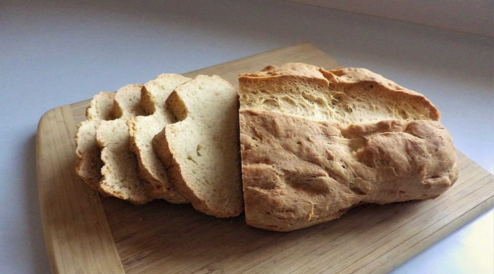

Recipe index
Cuban Bread

Description
Cuban bread is a rustic white bread made with some surprising ingredients including lard. It’s a traditional yeast bread but it requires a preliminary yeast-proofing step that’s easy to do in the bread machine. If lard is something you don’t keep on hand you can always use rendered bacon fat. Other options include shortening or butter, but the traditional recipe was a Cuban farm recipe and shortening was the fat of choice.
Ingredients
Proofing
- ½ teaspoon of bread machine yeast or active dry yeast
- 1 teaspoon of white sugar
- ½ cup of all-purpose flour
- ½ of water at 110 degrees F. or 43 degrees C. An easy way to get that temperature is to put the water in a Pyrex measuring cup in the microwave for 30 seconds. You should be very close to the ideal temperature.
Dough
Steps
For bread machine
- Begin the proofing step by combining the ½ teaspoon of yeast, teaspoon of sugar, ½ cup of flour and the ½ cup of water in the bread pan from the proofing ingredients list. Mix with a spoon to blend and let rest for 15 minutes until the yeast begins to bubble and grow.
- Add the rest of the ingredients to the bread pan and select the basic white bread setting for a 1.5-pound loaf and a medium crust.
- When the machine has completed the kneading and rising cycle and before the baking cycle begins, spray or rub with water quickly. Quickly slice a slit down the center of the loaf with a sharp knife and lower the lid and let the bread go into the baking cycle. This is an optional step.
- When done, remove from the bread pan and let rest for 10 minutes.
- Slice and serve.
To finish in the oven
- Begin the proofing step by combining the ½ teaspoon of yeast, teaspoon of sugar, ½ cup of flour and the ½ cup of water in the bread pan from the proofing ingredients list. Mix with a spoon to blend and let rest for 15 minutes until the yeast begins to bubble and grow.
- Add the rest of the ingredients to the bread pan and select the basic dough setting.
- After the dough has kneaded and risen, remove from the bread pan to a little oiled baking sheet. You could also sprinkle corn meal on the baking sheet instead of oil to insulate the loaf from the direct metal.
- Gently form into a short, elongated loaf and let rise covered with a cloth or plastic wrap for one-hour.
- While rising, preheat the oven to 375 degrees F./190 degrees C.
- When the dough has risen, spray or rub with water and cut a slice down the center of the loaf with a sharp knife.
- Bake at 375 degrees F./190 degrees C. for 30 to 40 minutes or until crust is browned.
From Bread Maker Machines